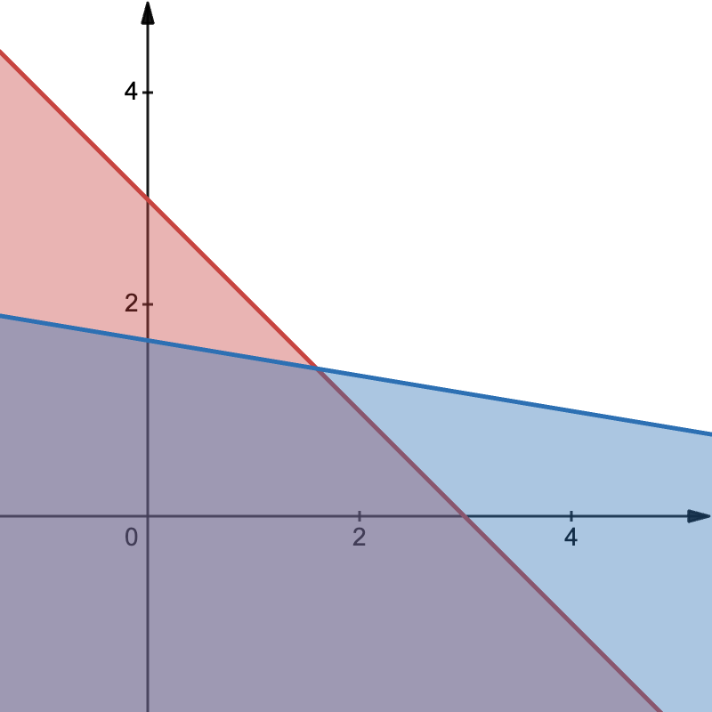

One common variant of Farkas' Lemma is stated as:
Let $A\in \mathbb{R}^{m\times n}$ and $b\in \mathbb{R}^m$. The system $Ax \le b$ is infeasible if and only if there exists a vector $y \in \mathbb{R}^m$ such that $y \ge 0, y^\top A = 0,$ and $y^\top b < 0$.
The system $Ax \le b$ describes a set of $m$ linear inequalities. Each inequality $a_i^\top x \le b_i$ defines a half-space in $\mathbb{R}^n$. The set of all $x$ satisfying the system is the intersection of these half-spaces, forming a convex polyhedron.
So, $Ax \le b$ is feasible $\iff$ the intersection of these $m$ half-spaces is non-empty. If $n=2$, this is the area bounded by several lines.

The Geometry of Infeasibility
How does a "certificate" $y \ge 0$ prove infeasibility? Since $y \ge 0$, we can take a non-negative linear combination of our original inequalities without flipping the inequality signs:
$$y^\top (Ax) \le y^\top b$$Because of the properties of $y$, we can rewrite the left side as $(y^\top A)x$. If we find a $y$ such that $y^\top A = 0$, the expression simplifies to:
$$0 \le y^\top b$$But the lemma states $y^\top b < 0$. This yields a contradiction.
Geometrically, this $y$ is constructing a "composite" constraint from the others. If $y^\top A = 0$, it means the weighted sum of the normal vectors of the half-spaces cancels out to zero. If the weighted sum of the offsets ($y^\top b$) is negative, it implies that the half-spaces are pushing away from each other so forcefully that no point can satisfy them all.